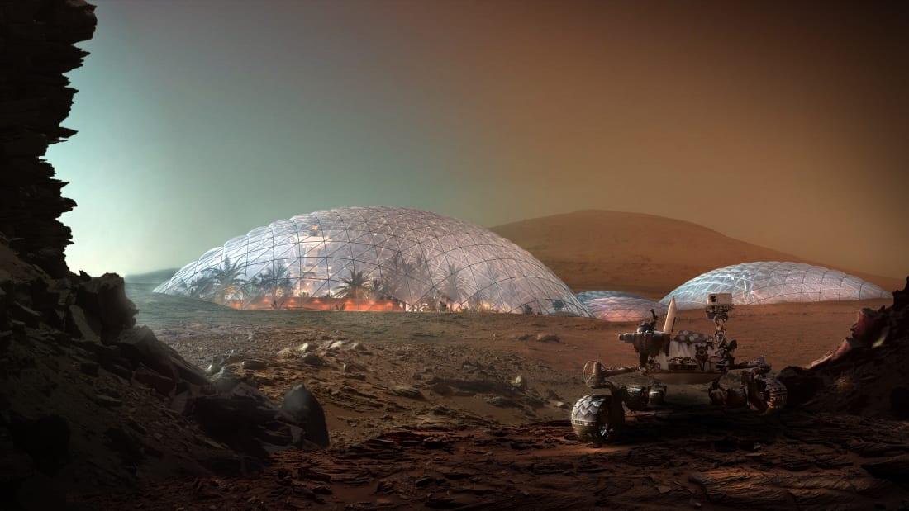
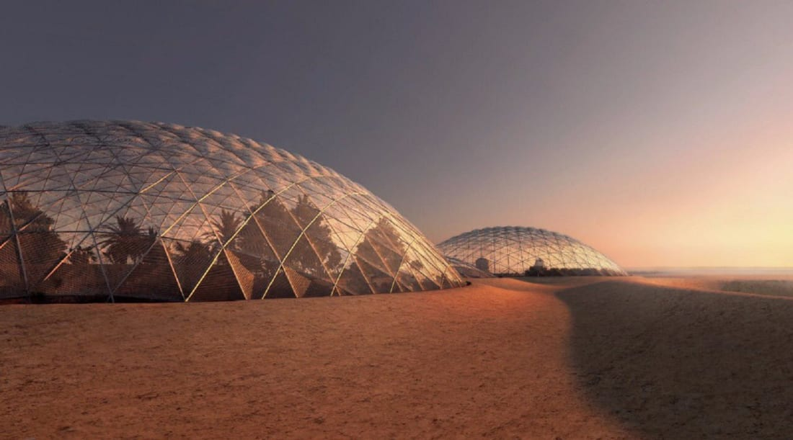
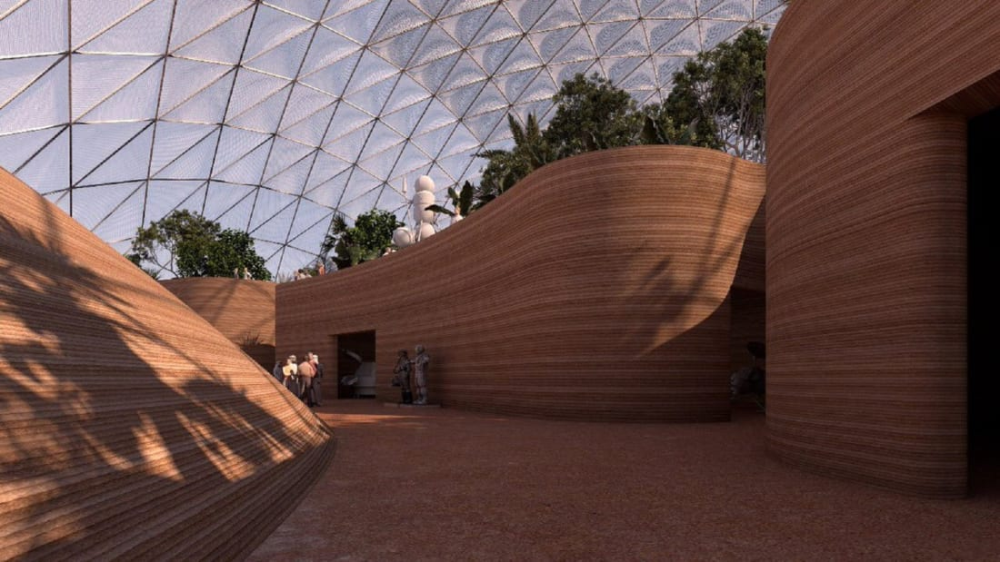
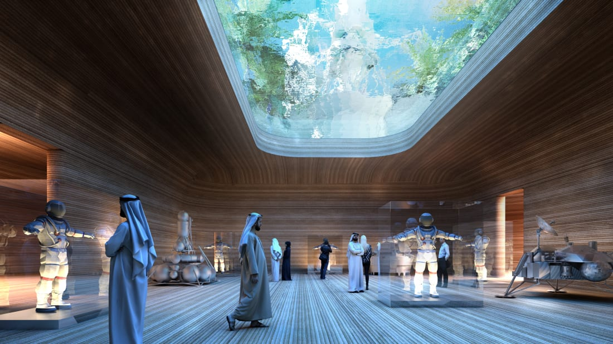
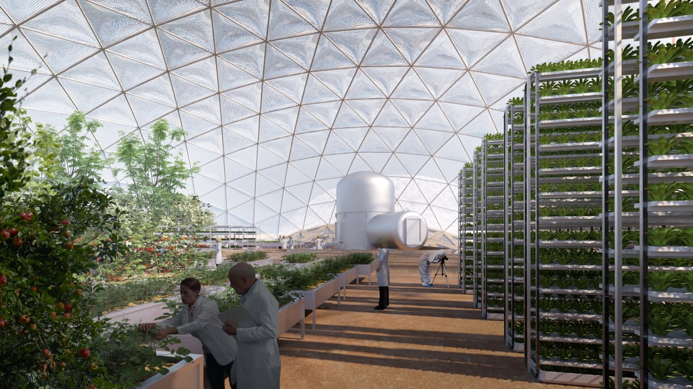
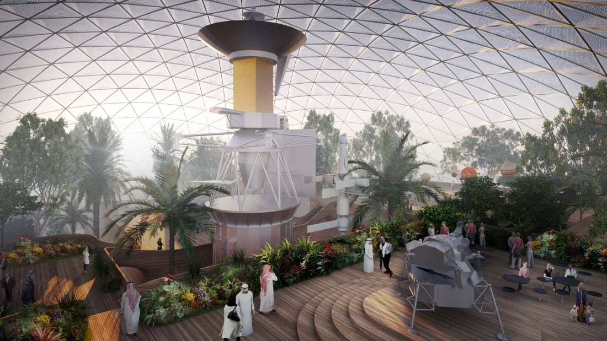
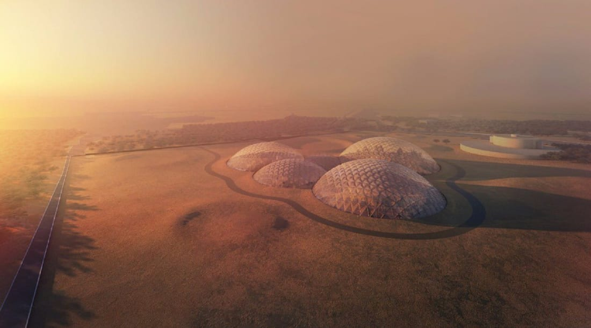
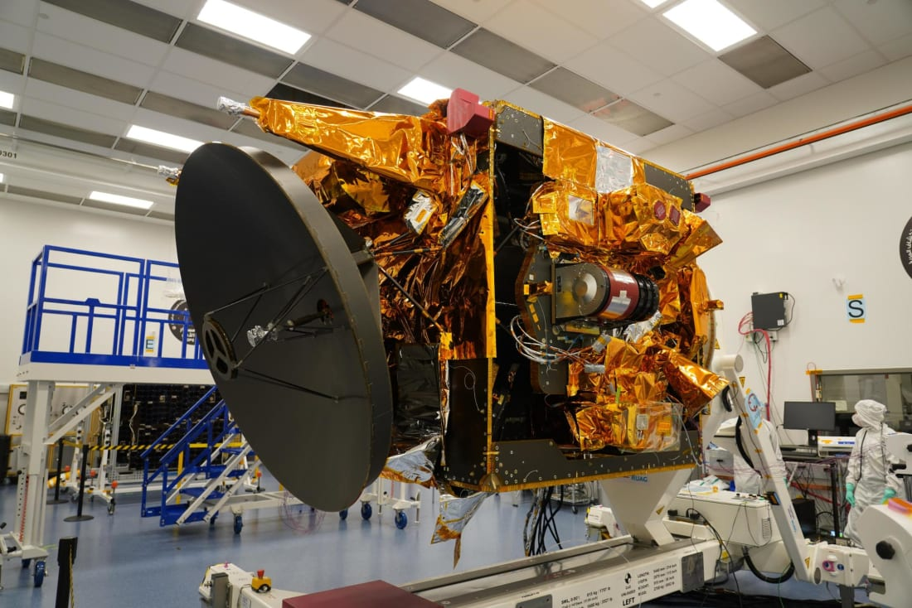
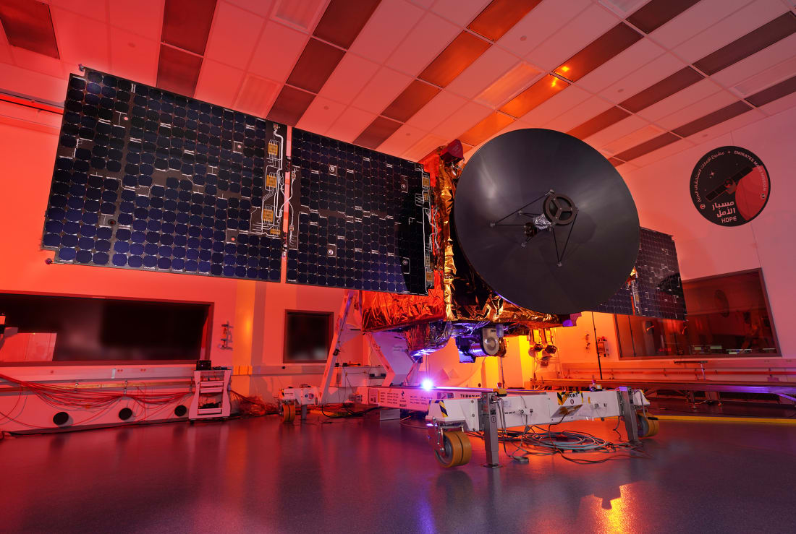
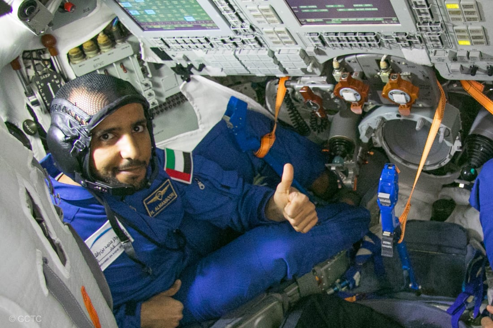

1 / 11 -Mars Science City is planned for the desert outside Dubai, intended as a space to develop technology to colonize Mars.
2 / 11 -Architects Bjarke Ingels Group (BIG) have designed a prototype of a city for humans to live on Mars, and then adapted the design for the Emirati desert.
3 / 11 -The design is made up of biodomes, each covered with a transparent polyethylene membrane.
4 / 11 -On Mars, buildings would be 3D printed under the domes, using Martian soil. On Earth, desert sand could be used instead.
5 / 11 -The design features water-filled skylights, which on Mars would shield residents from radiation, while allowing light to enter the rooms.
6 / 11 -BIG's design for the Earth-bound Science City sets aside areas for research into living on Mars, including growing food there.
7 / 11 -It also includes an exhibition space.
8 / 11 -Dubai's Mohammed Bin Rashid Space Centre (MBRSC) is behind the initiative. It says Mars Science City is still in the concept stage, and that it hasn't yet settled on a design or architect for the final build.
9 / 11 -The MBRSC is launching a Mars probe (pictured) this summer, which will reach the Red Planet in February 2021.
10 / 11 -The launch is planned to fall during the biennial window when Earth and Mars are closest together, starting in July 2020 and going into early August.
11 / 11 -In 2019, Major Hazzaa AlMansoori became the first Emirati in space and the first Arab astronaut to travel to the International Space Station.Mohammed Bin Rashid Space Centre.